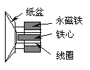
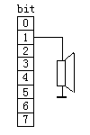

前一章提到汇编语言的一个用途是通过端口控制外部设备，本章我们就要用汇编语言编制一些小程序来控制机器中最富于趣味性的一个小设备--喇叭。我们的程序将使这个小部件发出各种各样的声音，从简单的嘀嘀声直至叮叮咚咚的音乐，还有乒乒乓乓的枪声。同时我们也会学到许多指令和程序设计技术。这对于我们今后的学习有很大的帮助。好，下面就让我们带着好奇的心情开始这艰难的开端吧。
喇叭的构造大概如图2－1所示，主要由纸盆、线圈、永久磁铁等组成。当有电流流过线圈时，线圈产生的磁场将和永磁铁的磁场相互作用，从而使线圈产生移动。和线圈相联的纸盆也会随之移动。若通过线圈的电流是连续变化的，则线圈移动的幅度也会变化，从而牵动纸盆振动，产生声音。

那么PC机中的小喇叭是怎么与机器相联的呢？我们能否改变流过喇叭线圈的电流呢？图2－2表示了喇叭与机器间简单的联接情况（实际情况要复杂些）。喇叭的一端接在电源正极上，另一端与机器中的61H端口的bit1位相联。可以想象，若能连续改变61H端口的bit1位的0，1状态，就可以使喇叭线圈内的电流时有时无，从而使喇叭发出声音。我们编制的汇编程序的工作，就是连续改变61H端口的bit1位状态。
如何将汇编程序输入计算机？各种高级语言都有自己的一套解释或编译程序，汇编语言也同样有自己的编译器。然而我们现在还没有良好的基础，因此现在就开始介绍汇编语言的编译系统还有些为时过早。好在DOS给我们提供的一个"迷你"汇编器--DEBUG。
任何版本的DOS都提供了这个小软件。它的主要用途是用来排除.EXE和.COM类的可执行程序中的逻辑错误。这可以从它的名字看出来。"BUG"，英文原意是"小虫子"，计算机界将其引申为程序中隐藏的逻辑错误。前缀"DE－"有"排除"的意思。
这个小软件还提供了将汇编语言的指令直接翻译成机器码的功能，这是我们现在所需要的。它还有一些其他特殊的本领，后面会逐渐介绍到。